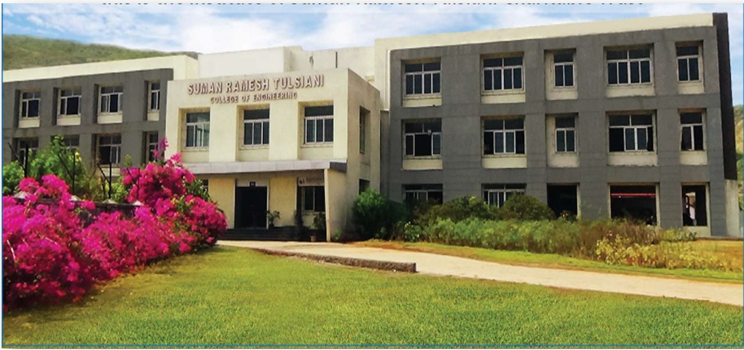

Suman Ramesh Tulsiani Technical Campus - Faculty of Engineering (SRTTC) was established in 2012 by Suman Ramesh Tulsiani Charitable Trust (SRTCT), Mumbai, Maharashtra, in order to produce engineering graduates capable of accepting challenges in the new environment of technical advancements. It was formally inaugurated by Prof. (Dr.) Snehalata Deshmukh, Vice-chancellor, Mumbai University. During past six years SRTTC has developed into an institute recognized amongst few top ranking engineering colleges in Pune, Maharashtra, India and is certified as ISO 9001:2015 certified institute and also Accredited by NAAC with 'B+' Grade. It is Approved by AICTE and DTE Maharashtra, Affiliated to S.P.P.U. and M.S.B.T.E.